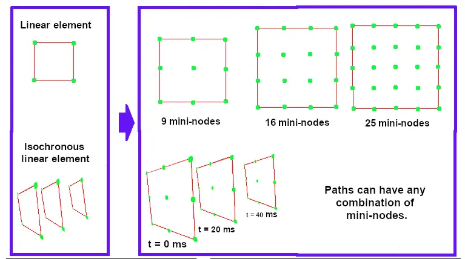

Măsurarea şi analizarea datelor provenite de la senzori este o tehnică de bază în dezvoltarea vehiculelor iar odată cu avansarea sistemelor încorporate şi de achiziție de date este posibilă analiza unor cantități mari de date.
În această lucrare este prezentată o metodă detaliată pentru evaluarea şi cartografierea modelelor de traiectorie izocrone prin utilizarea fuziunii de date video, respectiv a datelor furnizate de senzorul busolă HDMM01.
Modelele predictive ale traiectoriei izocrone sunt derivate din valorile datelor având un orizont de timp predefinit. Astfel se poate identifica atăt comportamentul extrem de conducere, cât şi geometriile periculoase ale drumului.
Este posibil să se furnizeze date instantanee ale senzorului rutier care pot fi utilizate pentru a compara datele dintr-o anumită traiectorie, precum şi pentru diferite instanțe de timp.
Rezultatele acestui studiu arată că tiparele de traiectorie au succes în prezicerea evoluției probabile a unui tipar de traiectorie actual şi pot oferi evaluarea situațiilor de conducere viitoare.
Datele obținute din acest studiu pot fi utile ca referință în planificarea urbană viitoare pentru căile de conducere care asigură economie de energie, precum şi pentru îmbunătățirea proiectării şi ingineriei vehiculelor bazate pe măsurători dinamice cantitative şi relevante.